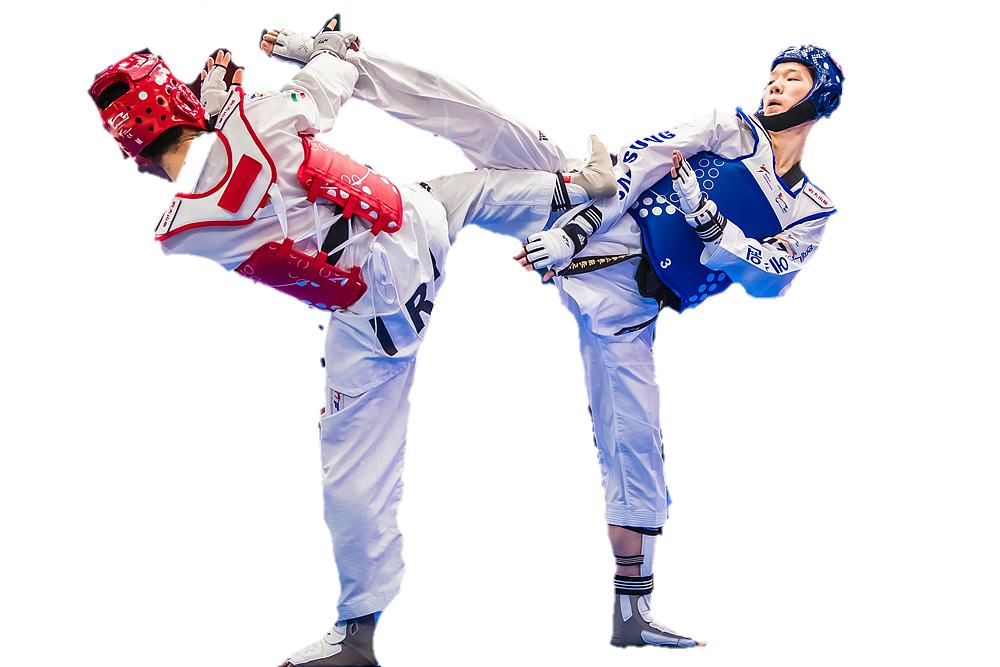
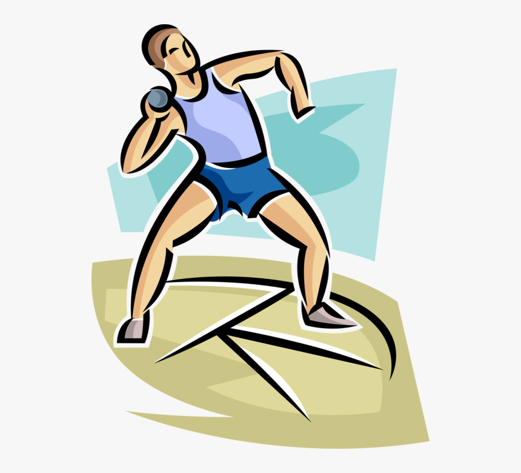
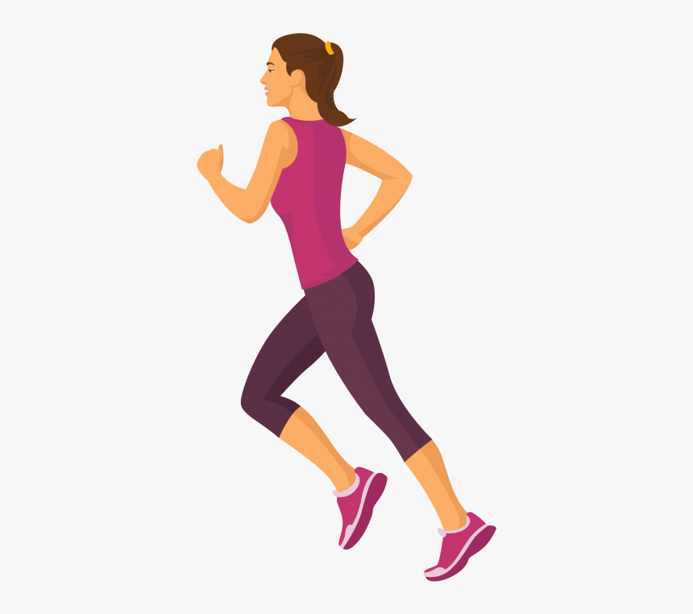

 Taekwondo, Tae Kwon Do or Taekwon-Do (Korean 태권도/跆拳道 [tʰɛ.k͈wʌn.do] (About this soundlisten), English pronunciation /ˌtaɪkwɒnˈdoʊ/,[2][3] or /ˌtaɪˈkwɒndoʊ/[4]) is a Korean martial art, characterized by its emphasis on head-height kicks, jumping spinning kicks, and fast kicking techniques with kicks and striking being above waist height only. got silver medal at district level.
 In sport, racing is a competition of speed, against an objective criterion, usually a clock or to a specific point. The competitors in a race try to complete a given task in the shortest amount of time. Typically this involves traversing some distance, but it can be any other task involving speed to reach a specific goal..gold medal in rely race ,conducted in school level.
 shotput throw one of the best sports which need more energy and strength.got gold medal at school level.